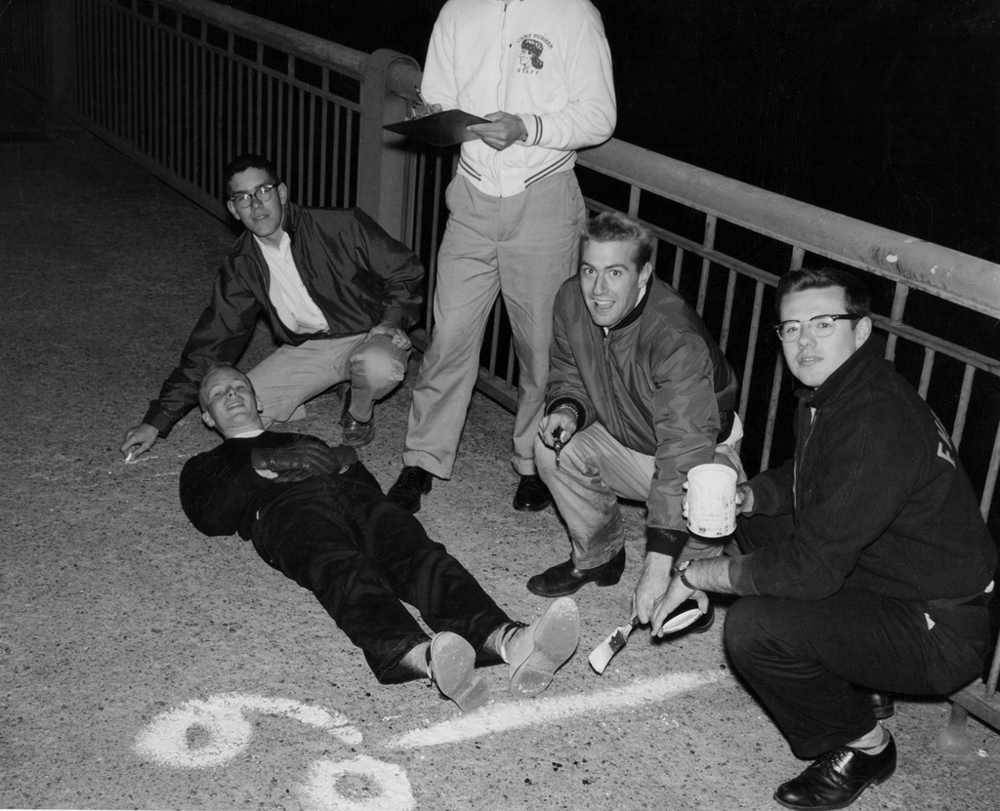
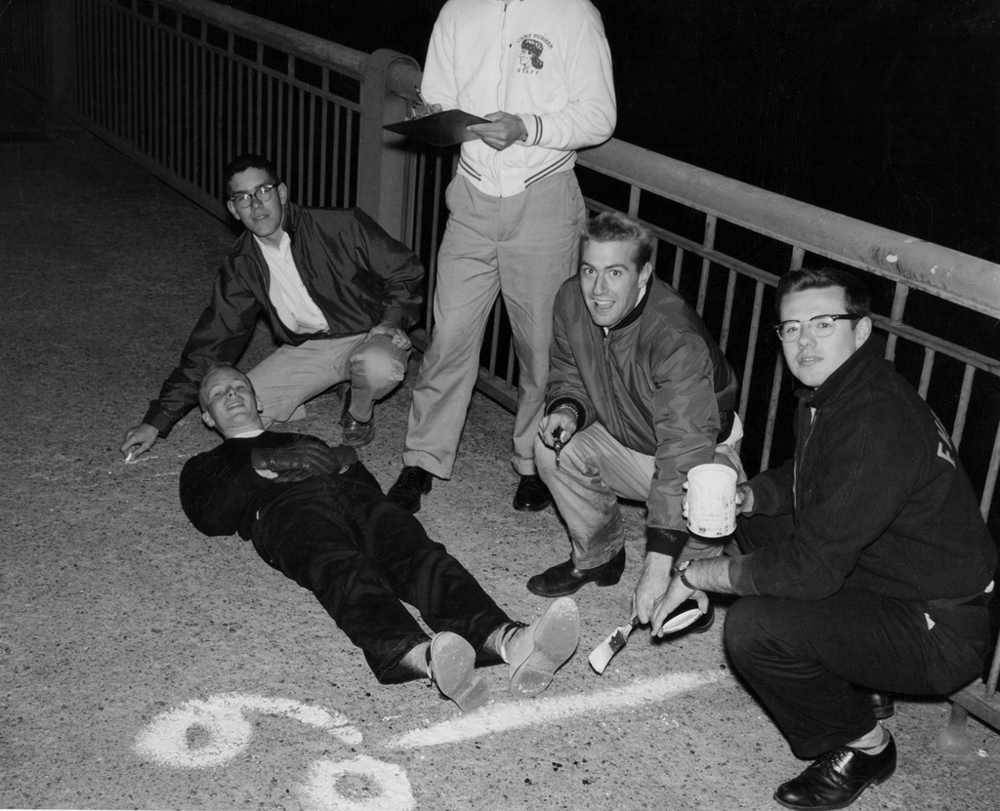
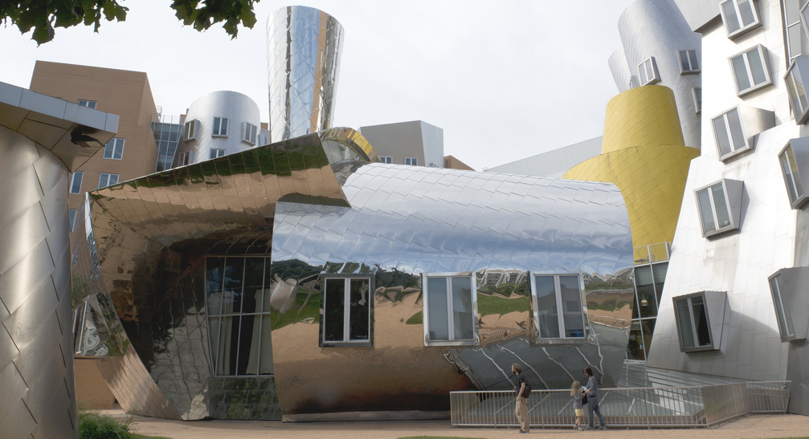
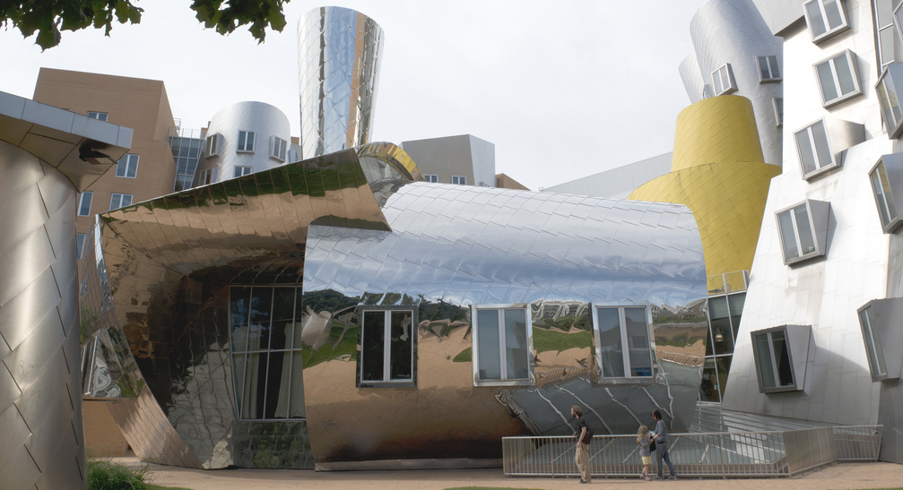

History
- Incorporated __________________________________________1861
- Motto ______________________________________ "Mind and hand"
Campus
- Location _________________________________Cambridge, MA USA
- Size_____________________________________168 acres (0.68 km2)
- Student residences________________________________________20
- Playing fields______________________________26 acres (0.68 km2)
- Gardens + green spaces__________________________________40+
- Publicly sited works of art__________________________________60+
Admission (Class of 2028)
- Applicants____________________________________________28,232
- Admits________________________________________________1,284
Selected Honors
- Nobel laureates__________________________________________105
- National Medal of Science winners__________________________61
- National Medal of Technology______________________________33
- MacArthur Fellows________________________________________84
- A. M. Truing Award winners________________________________17
More
- 01.MIT Facts
- 02.A brief history of MIT

MIT’s first building was in Boston, before the move to Cambridge in 1916.
Community (as of 10/30/23)
- Employees (including faculty)___________________________________17,180
- Professors (all ranks)___________________________________________1,089
- Other teaching staff_____________________________________________1,020
- Undergraduate student-to-faculty___________________________________3:1
- Student_______________________________________________________11,920
- Undergraduates________________________________________________4,576
- Women__________________________________________________2,231(49%)
- US minority groups________________________________________2,650(58%)
- Graduate students______________________________________________7,344
- Women__________________________________________________2,969(40%)
- US minority groups________________________________________1,617(22%)

In 2023–24, MIT students came from all 50 states, the District of Columbia, four territories, and 136 foreign countries.
For MIT’s faculty — just over 1,000 in number — cutting-edge research and education are inseparable. Each feeds the other. When they’re not busy pioneering the frontiers of their fields, MIT faculty members play a vital role in shaping the Institute’s vibrant campus community — as advisors, coaches, heads of houses, mentors, committee members, and much more.
Top resources
- 01.Awards & Honors
- 02.Faculty by School

MIT faculty instruct undergraduate and graduate students, and engage in research.
The Institute’s board of trustees, known as “the Corporation,” includes 78 distinguished leaders in engineering, science, industry, education, and other professions.
Top resources
- 01.Office of the President
- 02.Senior Leadership
- 02.MIT Corporation
MIT faculty instruct undergraduate and graduate students, and engage in research.
MIT is an integral part of its host city of Cambridge, a diverse and vibrant community noted for its intellectual life, history, and thriving innovation climate. With a campus nestled between Central and Kendall Squares, and across the Charles River from Boston’s Back Bay, the Institute is optimally positioned to collaborate with its neighbors and to contribute to its community.
Top resources
- 01.Visit MIT
- 02.Kendall Square
- 02.Visiting Boston
MIT faculty instruct undergraduate and graduate students, and engage in research.
 


 


Massachusetts Institute of Technology
77 Massachusetts Avenue, Cambridge, MA, USA
Visit
Map
Events
People
Careers
Contact
Privacy
Accessibility
Social Media Hub